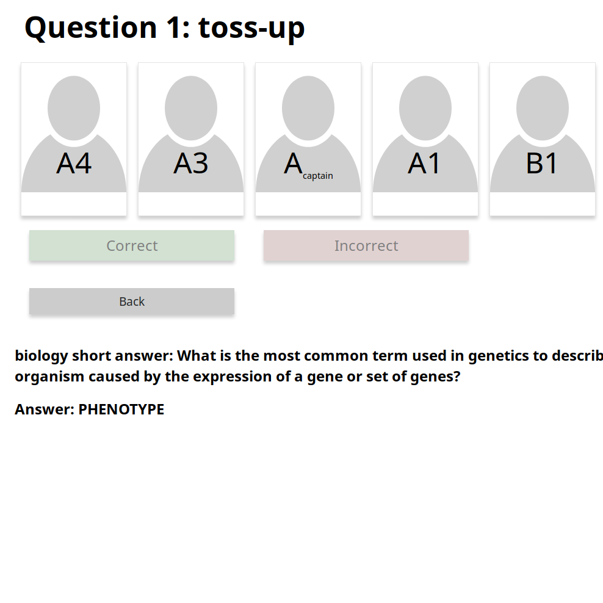

Projects
These are personal projects that I've worked on over the past few years. With the exception of a few components, they are fully original work. Most are made in C/C++ or Python, but some incorperate pieces of HTML, CSS, JavaScript, SQL, PHP, and x86 Assembly.
OTOS
A hobbyist microkernel and operating system
- Written in x86 Assembly and C
- Designed to put most functionality in userspace

Science Bowl Data Logger
A website developed for a high school science bowl team that allows tracking of team and individual performance.
- Written in HTML/CSS/JavaScript, PHP, and SQL
- No longer maintained by me, but still in use by my high school's team
Discourse - Political Chat Web App
A hackathon project that pairs people of differing viewpoints and uses AI to encourage civil conversation.
- Written in HTML, CSS, JavaScript
- Frameworks/Backends: IBM Watson, Google Firebase, Node Red
- Won IBM Watson Award at 2019 Irish Hacks Hackathon
Ray Tracer
A simple ray tracer capable of rendering reflections and simulating depth of field.
- Written in C/C++
- Uses SDL as a graphical backend

Graphics Library
A lightweight software rendering library that can render to windows with SDL or directly to the Linux Frame Buffer.
- Written in C/C++
- Includes extensions for rendering image formats and TrueType fonts
Organic Chemistry Naming Quiz
A simple quiz program for practice naming organic molecules.
- Written in C/C++
- Displays graphics through Tkinter
Grapher 3D
A basic graphic calculator than can display two and three-dimensional equations.
- Written in C/C++
- Uses the Graphics Library Project as a Base
Bootloaders
A simple 2 stage bootloader developed for a small operating system project
- Written in x86 Assembly
- Designed for easy booting from a FAT32 partition on an MBR partitioned drive